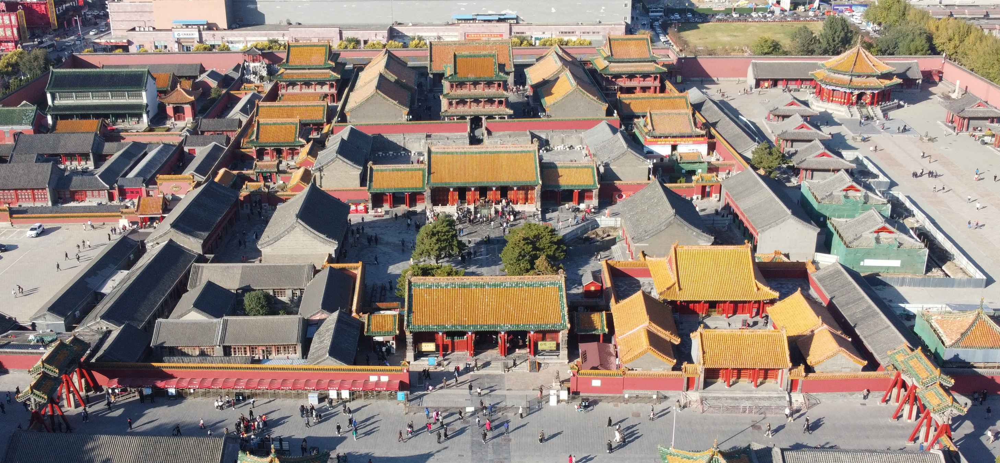
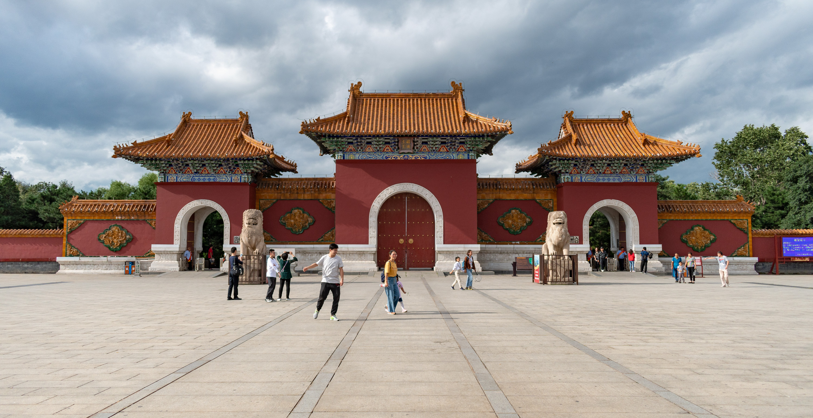
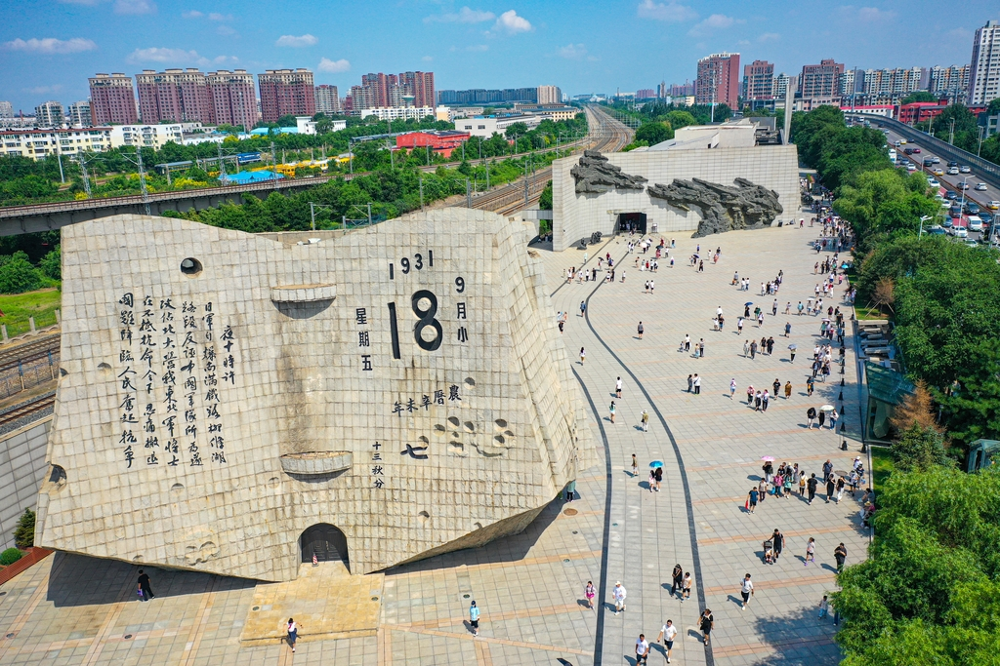

Shenyang Imperial Palace, built in 1625, is China’s only surviving imperial palace besides Beijing’s Forbidden City—and a UNESCO World Heritage Site. It served as the residence of Nurhaci (founder of the Qing Dynasty) and his son Huang Taiji before the dynasty moved its capital to Beijing in 1644. Covering 60,000 square meters, the palace blends three architectural styles: Manchu (seen in the low, log-framed buildings), Han (traditional Chinese roof structures), and Mongolian (decorative patterns). Key attractions include the Hall of Great Harmony (used for imperial ceremonies, with dragon-carved pillars and a throne), the Phoenix Tower (a 24-meter-tall tower that was once the highest point in Shenyang), and the East Palace (where imperial concubines lived, with delicate painted beams). The palace also houses a collection of Qing Dynasty artifacts, including imperial robes, jade, and calligraphy.
Spring (April–May): Cherry blossoms bloom in the palace’s courtyard, 10–18°C.
Autumn (Sept–October): Cool weather (12–20°C), clear skies for photos of the roof tiles.
Avoid summer afternoons (hot and crowded); visit in the late afternoon instead.
50 CNY/adult; 25 CNY/students (with valid ID); free for kids under 1.3 meters.
Guide service: 150–200 CNY/1.5h (negotiable for small groups).

Zhaoling Tomb, also known as “Beiling” (Northern Tomb), is the mausoleum of Huang Taiji (the second Qing emperor) and his empress Xiaoduanwen. Built between 1643 and 1651, it’s one of China’s largest and best-preserved imperial tombs, covering 160,000 square meters. The tomb’s layout follows traditional Chinese “feng shui” principles: it’s surrounded by pine forests (over 3,000 pine trees, some over 300 years old) and faces south, with a long “Sacred Way” lined with 18 stone statues (including horses, elephants, lions, and imperial bodyguards). The main tomb building, the Hall of Eternity, has a red exterior and golden roof, and inside, there are exhibits about Huang Taiji’s life. Beyond the tomb itself, the surrounding Beiling Park is a popular spot for locals to relax, with lakes, hiking trails, and even a small amusement park.
Autumn (Oct–November): Pine needles turn golden, 8–16°C—beautiful for hiking.
Winter (Dec–February): The lake freezes over, and the tomb’s red buildings contrast with snow, 0–5°C.
Spring (April): Wildflowers bloom in the park, 10–15°C.
Tomb area: 50 CNY/adult; 25 CNY/students; free for kids under 1.3 meters.
Beiling Park (outside the tomb): Free entry.
Paddle boat rental: 60 CNY/hour (2-person), 80 CNY/hour (4-person).

Shenyang 9·18 History Museum is a solemn and powerful museum dedicated to the “Mukden Incident” of September 18, 1931—a key event that led to Japan’s invasion of Northeast China. The museum’s building is shaped like a broken star (symbolizing national suffering and resilience) and covers 12,600 square meters. Exhibits include historical photos, artifacts (like Japanese military uniforms and Chinese resistance weapons), and interactive displays (e.g., a timeline of the incident and oral histories from survivors). The most moving part is the “Cry of the Nation” hall, which plays recordings of survivors’ testimonies. Outside the museum, there’s a large stone monument inscribed with “September 18, 1931” and a bell that rings every year on the anniversary of the incident to honor the victims.
Year-round: The museum is indoors (20–25°C) and open every day except Monday.
September 18: The museum holds a memorial ceremony (free to attend) to commemorate the incident—very meaningful but crowded.
Free entry (but you need to book a ticket online 1 day in advance via the museum’s official website).
Audio guide (Chinese/English): 30 CNY/rental.